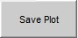
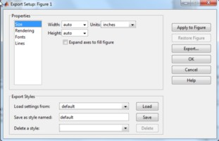
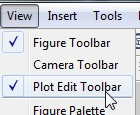
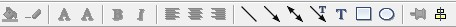

Save Plot

When the "Save Plot" button is pressed, the current display figure is copied to a new MATLAB figure and the export figure function is run. Users can then use the export fig options to alter the size and font of the figure and save the display in one of many formats including .eps, .jpg, .png, .pdf, .tif and more.

If you want to do more advanced editing of the figure (zoom, highlight data, add text), users can cancel the export (click the "Cancel" button) and then use the various MATLAB figure tools to alter the plot. The Figure toolbar is already visible and lets the user zoom in, out, pan, rotate, and highlight data points.
In order to add text and arrows to the drawing, the user can select to view the Plot Edit toolbar through the View menu

The following menu bar will be added to the figure.

After editing, users can save the figure as a MATLAB figure, or rerun the export function from the File menu on the figure.
For more information about manipulating the Matlab Figure Window, users are referred to the MATLAB documentation on the subject at
http://www.mathworks.com/help/techdoc/creating_plots/f9-53405.html
Copyright © 2011, Ralph T. Muehleisen
Created with the Freeware Edition of HelpNDoc: Full featured multi-format Help generator